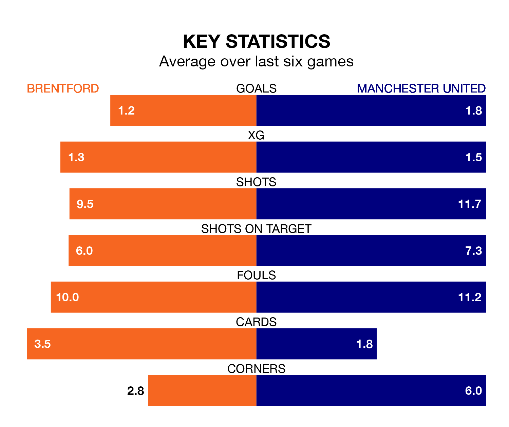

Brentford are on a terrible run ahead of hosting Manchester United at the Gtech Community Stadium on Saturday, with just one point collected from their last six games.
The Bees have picked up just one draw in their last six Premier League games, and face a Red Devils side whose last six games have brought four wins and two losses.
In André Onana, United can rely on one of the league's safest pair of hands. He has kept eight clean sheets in his 28 appearances this season, and only one other 'keeper – Arsenal's David Raya – has been able to prevent the opposition scoring on more occasions in the Premier League.
In Brentford's net, Mark Flekken has four clean sheets in 28 games. He has conceded a goal every 48 minutes, 50% more often than the 74 minutes between goals for Onana Onana.
The Bees are 16th in the table after 29 games, of which they have won seven and drawn five, earning 26 points.
The Red Devils are 10 places ahead of the hosts in sixth, with 15 wins and two draws putting them on 47 points.
With 39 goals in 28 games so far this season, the away team are scoring at below the league average rate with 1.4 goals per game. But they are conceding fewer than average too, letting in 39 goals at a rate of 1.4 per game.
Brentford are also below average scorers, with 1.4 goals per game, compared to a league average of 1.6. They have conceded 1.9 goals per game.
In the last five years, Brentford and United have played each other on five occasions. Brentford won one of them and United the other.
On average, the Bees scored 1.2 goals and the Red Devils 1.8 in those matches.
Their last meeting was on October 7, when United won 2-1 at home.
Brentford's last match was on March 16, a 2-1 loss against Burnley, with Kristoffer Ajer getting the goal for the Bees.
United beat Everton 2-0 last time out, on March 9, with Bruno Fernandes and Marcus Rashford on the scoresheet.
Updated: 12:39 (UTC), 26/03/24